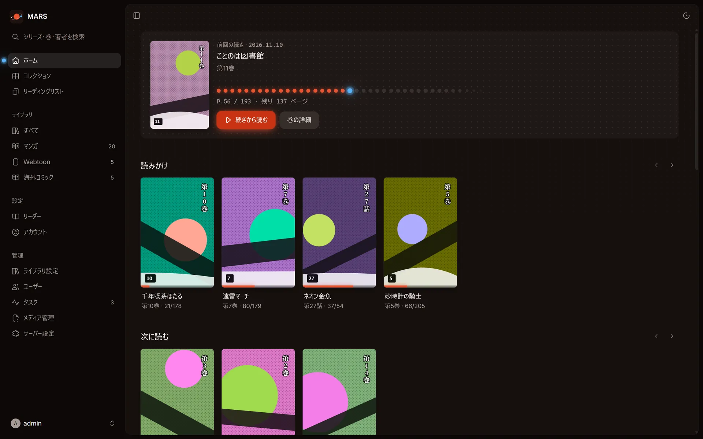
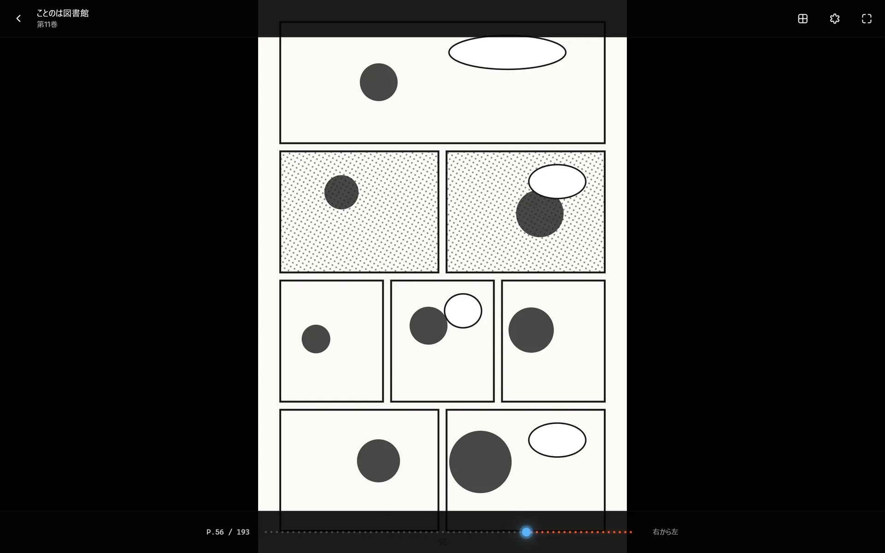
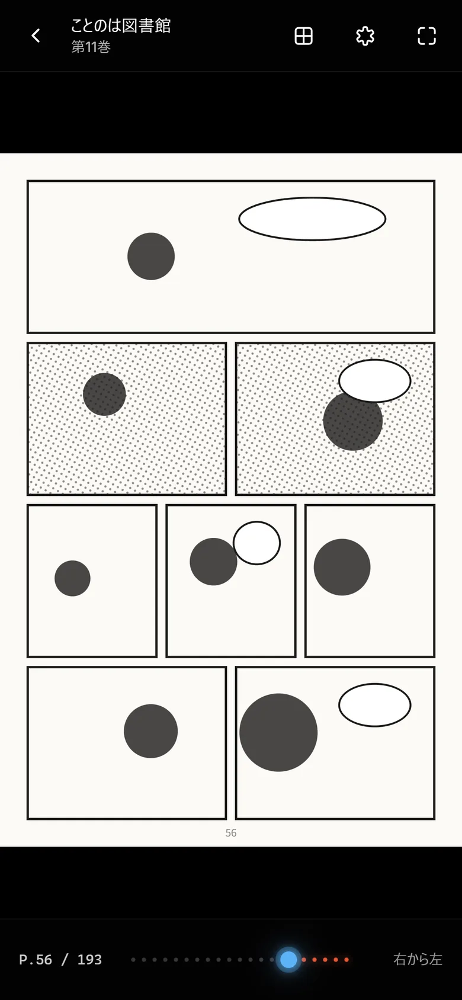
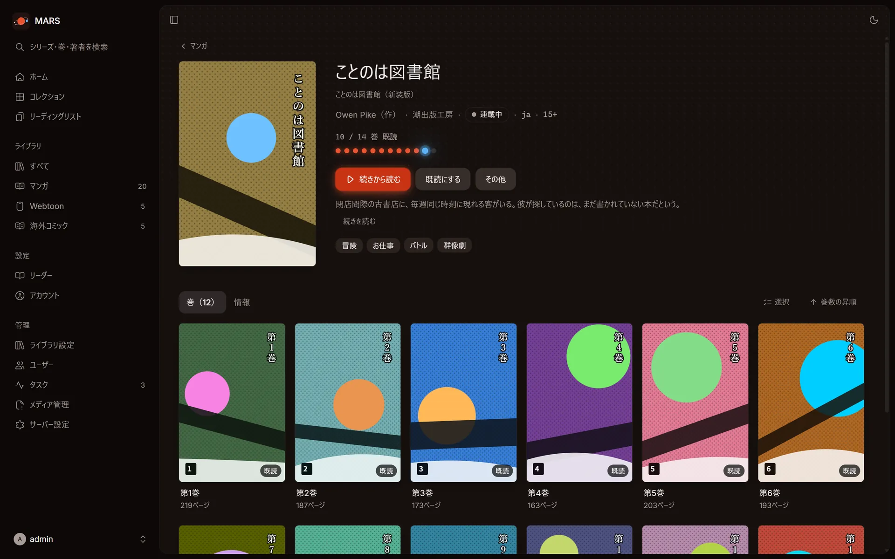
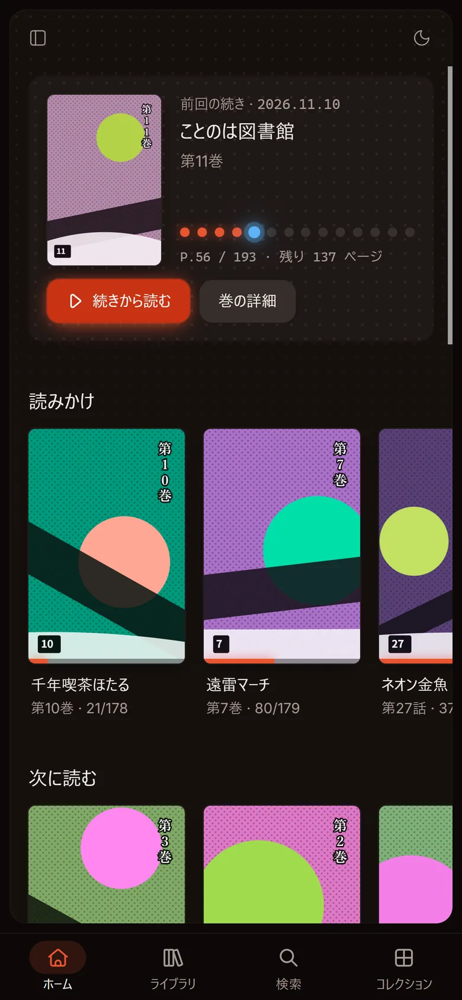

手持ちのマンガを、ブラウザで読める本棚に
MARS は、自分のサーバーで動かすマンガ・コミックのサーバーです。フォルダを読み込んでシリーズと巻にまとめ、どの端末のブラウザからでも続きを読めます。
現在の版は v0.1.0（プレビュー版）です。v1.0.0 は、大きなライブラリで不具合が見つかったため取り下げました。
Docker イメージは約 8 MiBamd64 と arm64MIT ライセンス

ブラウザを開けば、すぐに読める
リーダーはブラウザの中で動きます。読むためのアプリを入れる必要はありません。
- 右から左、左から右、縦方向に対応しています。Webtoon のような縦スクロールと、見開き表示も使えます。
- 読んだページを覚えていて、次の巻へそのまま進めます。
- シークレットモードで読むと、進捗を残しません。
- 背景色は黒・グレー・白から選べます。


フォルダを指定すれば、シリーズと巻にまとまる
アーカイブを入れたフォルダが、シリーズになります。表紙の画像と ComicInfo.xml も読み込みます。
- CBZ / ZIP、CBR / RAR（RAR5 を含む）、CB7 / 7z、PDF に対応しています。
- ファイルの変更を監視して、自動でスキャンします。定期スキャンもできます。
- メタデータは画面から編集できます。ロックした項目は、スキャンで上書きされません。
- コレクションとリーディングリストで、作品や巻をまとめられます。

ユーザーを分けて使い、ほかのアプリからも読める
ユーザーごとに、見られるライブラリを分けられます。
スマホとタブレット
ホーム画面に追加して、アプリのように使えます（PWA）。
Mihon
Komga 拡張とトラッカーが使う、Komga 互換 API を備えています。
OPDS 1.2
Panels、Chunky、KyBook などの電子書籍アプリから読めます。
ユーザーと API キー
管理者と一般ユーザーを分けられます。外部のアプリ用に API キーを発行できます。

Your manga.Your server.Your universe.
Docker で起動して、3 つの手順で使い始める
Docker と、マンガを置いたフォルダを用意します。環境は linux/amd64 か linux/arm64 です。
-
起動する
公開イメージを取得して起動します。
/path/to/comicsは、マンガのフォルダに置き換えてください。docker run -d --name mars -p 25600:25600 -v mars-data:/data -v /path/to/comics:/comics:ro ghcr.io/tabunugoku/mars:0.1
-
管理者を作る
ブラウザで http://localhost:25600 を開き、セットアップトークンを入力して管理者を作ります。トークンは次のコマンドで確認できます。
docker logs mars 2>&1 | grep token=
-
ライブラリを追加する
管理 > ライブラリ設定 でライブラリを追加を選び、フォルダに
/comicsを指定して保存します。